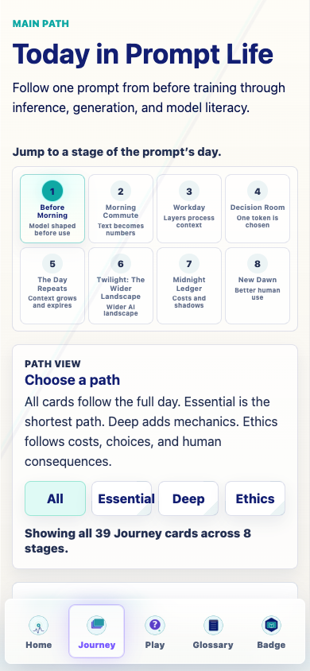
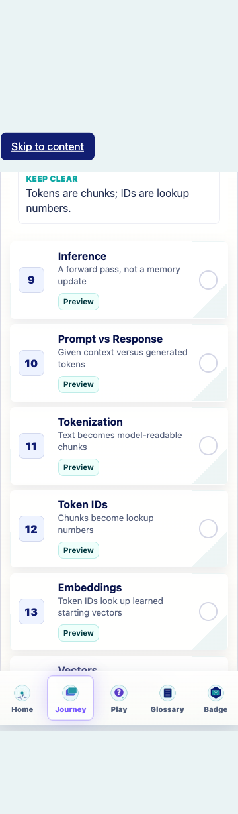
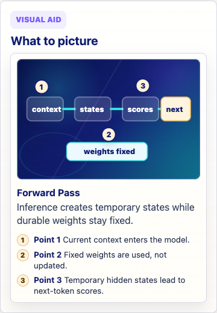
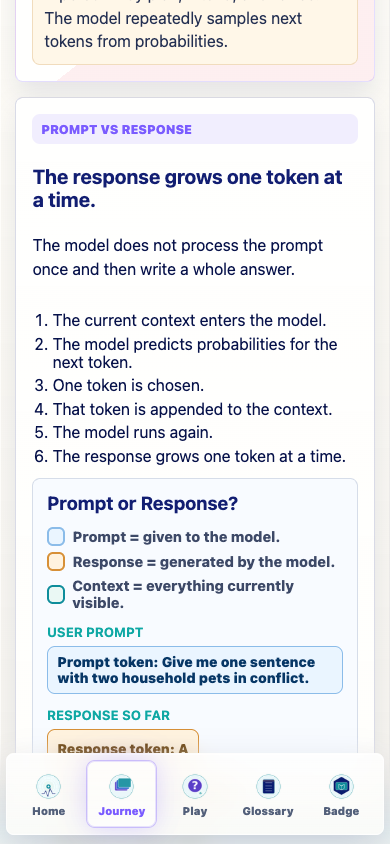
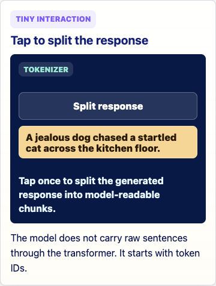
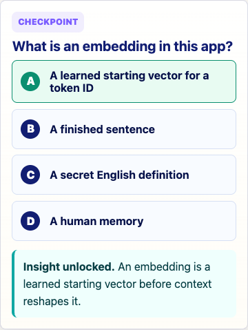
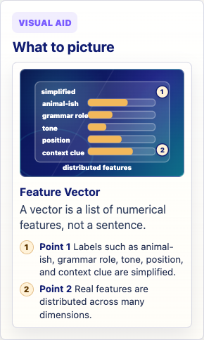
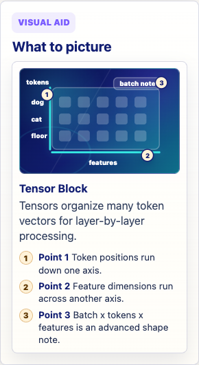

Prompt Life internal audit
Date: 2026-06-06
Stage: Morning Commute
Cards: Inference, Prompt vs Response, Tokenization, Token IDs, Embeddings, Vectors, Tensors.
Scope: audit-only. No live curriculum changes, generated assets, new games, heavy 3D libraries, progress changes, checkpoint randomization changes, or badge changes.
Result: The stage is accurate and in a sound order. The next pass should focus on visual specificity and tiny interactions, especially Vectors and Tensors.
Keep all seven cards. Repair coded visuals and tiny interactions before adding any generated Morning Commute PNGs. If one Image 2 asset is later generated, Embeddings is the best candidate because a textless lookup-table/meaning-cloud image could reduce abstraction while HTML keeps labels accessible.

Journey top: stage navigation remains readable at 390px.

Morning Commute overview: actual card order is Inference, Prompt vs Response, Tokenization, Token IDs, Embeddings, Vectors, Tensors.

Inference: accurate forward-pass visual; next pass should emphasize temporary activations over fixed weights.

Prompt vs Response: role distinction is clear; demo is tall on mobile.

Tokenization: interaction should show uneven chunks and punctuation/space cases.

Embeddings: checkpoint reinforces learned starting vector.

Vectors at 320px: readable, but concept remains abstract and simplified labels need care.

Tensors at 320px: readable; strongest candidate for CSS 3D or coded axis inspection.
Regression QA: Before Morning generated assets still load in the review gallery.